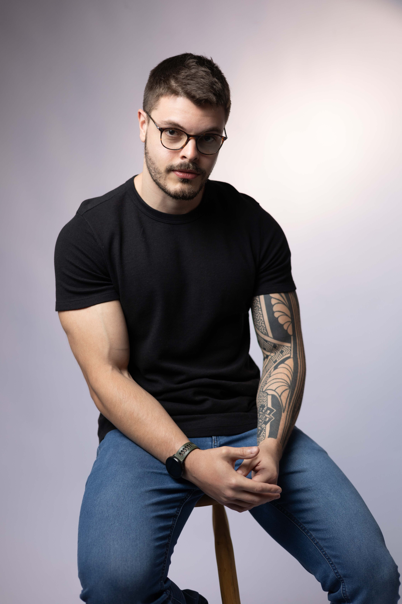

Psicólogo Clínico · CRP 06/193290
Você já deu um passo importante em prol da sua saúde mental. Como terapeuta cognitivo, meu objetivo é ajudar meus pacientes a identificar suas aspirações, valores e propósito, focando em seus pontos fortes e recursos para superar obstáculos e chegar a conclusões mais coerentes sobre si mesmos e suas experiências.
Caso entenda que posso ser útil na sua busca, ficarei realizado em contribuir nessa jornada.

"Cuidar de si mesmo é o ponto de partida de tudo que importa."
Matheus CamilloSobre mim
Há doze anos, com a cabeça cheia de dúvidas sobre a vida e sobre o futuro, tomei a decisão de me tornar psicólogo. A motivação? Ajudar pessoas a se afastarem do sofrimento e, com isso, contribuir um pouco com a sociedade. O tempo passou, mas o propósito permanece o mesmo.
Essa jornada moldou profundamente a forma como trabalho e como penso. No âmbito organizacional, passei por grandes empresas e por startups em crescimento acelerado, ambientes que me expuseram a uma diversidade imensa de perfis, pressões e desafios humanos. No âmbito clínico, o contato constante com as mais diversas formas de sofrimento e vulnerabilidade também transformou meu modo de enxergar a vida, um aprendizado que segue em curso. Desse percurso nasceu um princípio que carrego até hoje: uma atuação firmemente ancorada na ciência, comprometida com as melhores evidências disponíveis, mas que nunca perde de vista o que há de mais essencial no processo terapêutico, a conexão humana.
"Conheça todas as teorias, domine todas as técnicas, mas ao tocar uma alma humana, seja apenas outra alma humana."
— Carl Jung
Abordagem
Terapia Cognitivo-Comportamental
Desenvolvida na década de 1960 pelo psiquiatra norte-americano Aaron T. Beck, na Universidade da Pensilvânia, a Terapia Cognitivo-Comportamental surgiu de uma pergunta simples, mas revolucionária: e se o sofrimento emocional estivesse ligado não aos eventos em si, mas à forma como interpretamos esses eventos?
Beck identificou que seus pacientes com depressão compartilhavam padrões de pensamento distorcidos — os chamados pensamentos automáticos — que alimentavam sentimentos de desesperança e comportamentos disfuncionais. A partir daí, desenvolveu um método estruturado para identificar, questionar e transformar esses padrões.
A TCC é uma abordagem orientada para o presente, focada em metas concretas e com duração definida. Ela parte do princípio de que pensamentos, emoções e comportamentos estão interligados — e que modificar a forma como pensamos gera mudanças reais em como sentimos e agimos.
Neurociência do Comportamento
A Neurociência do Comportamento estuda como o funcionamento cerebral influencia diretamente nossas emoções, pensamentos e ações. Trata-se de uma ponte entre a biologia e a psicologia: enquanto a TCC age sobre os padrões de pensamento, a neurociência explica o que acontece no cérebro quando esses padrões se transformam.
Pesquisas mostram que intervenções psicológicas como a TCC são capazes de promover mudanças concretas no cérebro — reduzindo a hiperatividade da amígdala, estrutura associada ao medo e à ameaça, e fortalecendo o córtex pré-frontal, responsável pelo controle emocional e pela tomada de decisão.
Integrar o conhecimento neurocientífico à prática clínica permite compreender o sofrimento do paciente em sua dimensão mais completa — biológica, cognitiva e emocional — tornando o cuidado mais personalizado, mais preciso e mais eficaz.
Especialidades
Depoimentos
"Matheus é um profissional excelente, sempre muito empático, cuidadoso com a história do paciente"
"Matheus é um profissional muito atencioso, preocupado com o bem estar de seus pacientes. Demonstra escuta atenta, respeito e sensibilidade durante as sessões, o processo com ele tem sido muito positivo para mim, mesmo com idas e vindas!"
"Matheus is very kind and attentive and gives calming responses and is happy to work long term."
Avaliações reais de pacientes atendidos
Área do Paciente
Pacientes em acompanhamento têm acesso a uma plataforma exclusiva com testes psicométricos validados, histórico de resultados e indicadores personalizados de saúde mental — tudo com total segurança e privacidade.